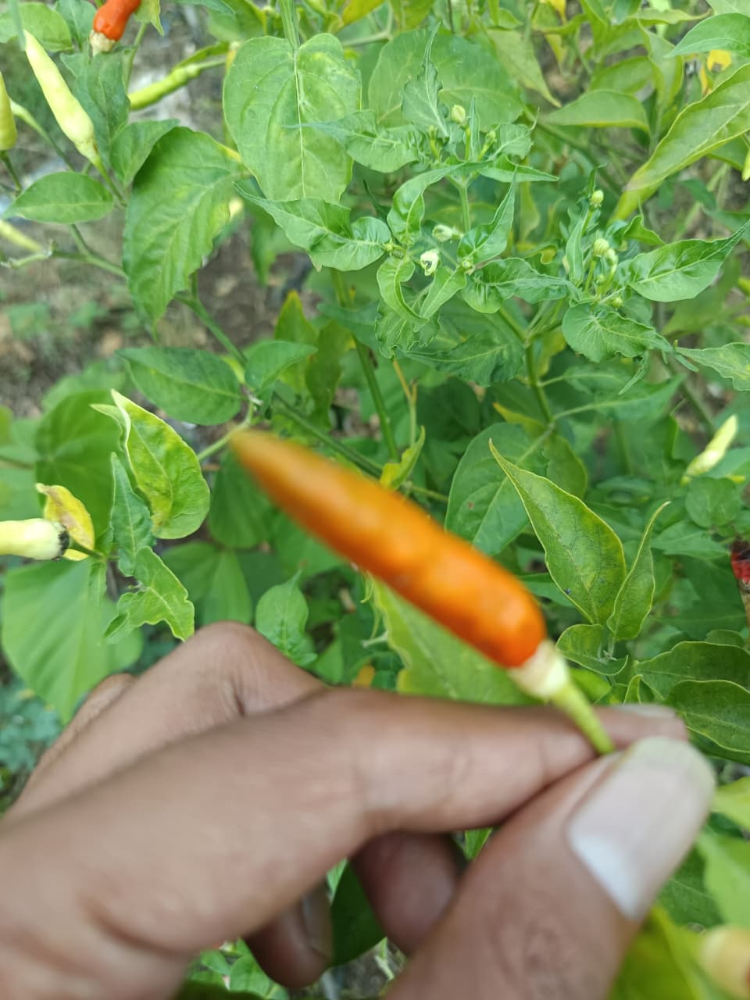
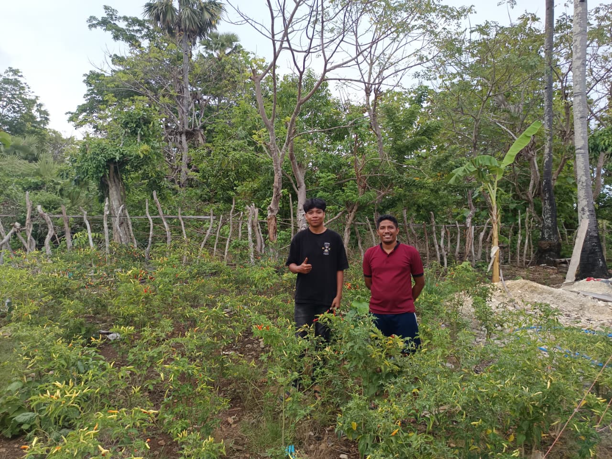
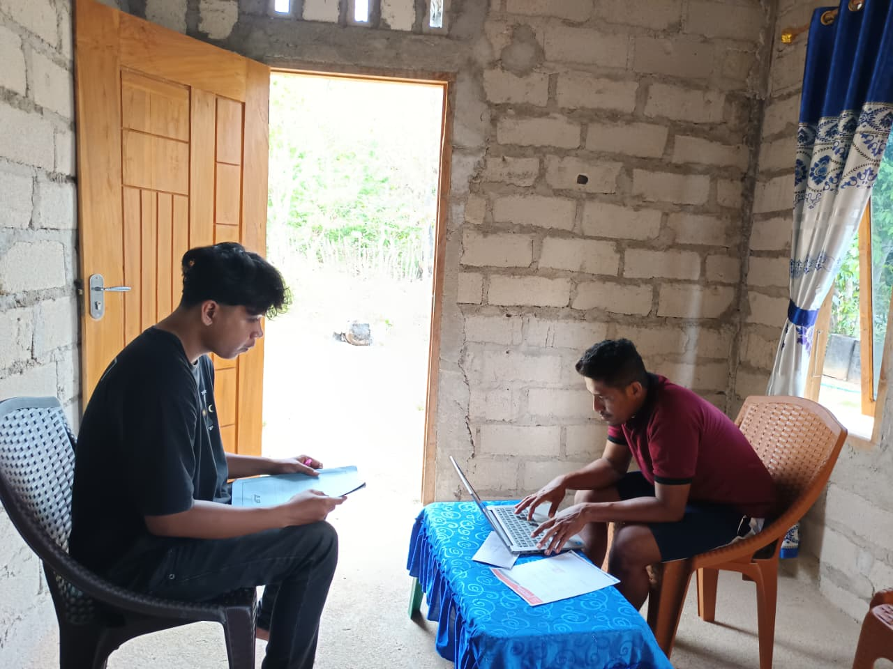

FIELD DOCUMENTATION
FIELD DOCUMENTATION
Praktik Kerja Lapangan
Dinas Pertanian dan Ketahanan Pangan Provinsi NTT
- Melakukan penginputan data bibit dan pupuk.
- Mendokumentasikan kegiatan lapangan.
- Membantu administrasi dan pengolahan data.
Pengalaman praktik, pengabdian, dan kegiatan penelitian.
FIELD DOCUMENTATION
Dinas Pertanian dan Ketahanan Pangan Provinsi NTT
 COMMUNITY SERVICE
COMMUNITY SERVICE
Pengalaman pengabdian dan keterlibatan dalam kegiatan masyarakat.
Desa Baumata Pusat, 2025,Membuat peta desa, dan sistem penelolaan data desa.
 RESEARCH ACTIVITY
RESEARCH ACTIVITY
Pengumpulan informasi dan dokumentasi kegiatan penelitian di Kabupaten Rote.
Foto tanaman cabai, Desa Landuleko, 2026.
Contoh karya akademik dan proses pengembangan yang pernah dilakukan.
 WEB APPLICATION
WEB APPLICATION
Proyek pengembangan website untuk mengklasifikasikan tingkat kematangan cabai berdasarkan citra. Sistem dirancang untuk membantu proses pengenalan kategori kematangan melalui antarmuka web.
Dokumentasi proses penelitian, observasi, dan pengumpulan data di Kabupaten Rote.


